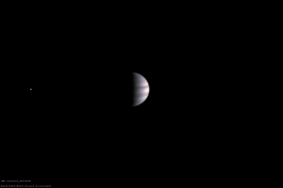

Spectral Decomposition Reveals Surface Processes on Europa
Published in The Astrophysical Journal
Link to paper
Planetary Scientist
I'm fascinated by the hidden structures that shape both the natural world and human culture. My work spans planetary science, astronomy, and statistical learning to search for life beyond Earth.
Currently, I am a postdoctoral fellow in the group of Yohai Kaspi at the Weizmann Institute of Science, where I lead efforts to assess Europa's habitability by exploring its surface texture, composition, and coupling to the Jovian magnetosphere.
I will soon be joining Jonathan Lunine's research group as a Fulbright Postdoctoral Fellow at Caltech.
Published in The Astrophysical Journal
Link to paperAccepted for publication in Nature Astronomy
ArXiv linkPublished in Astrobiology
Link to paper